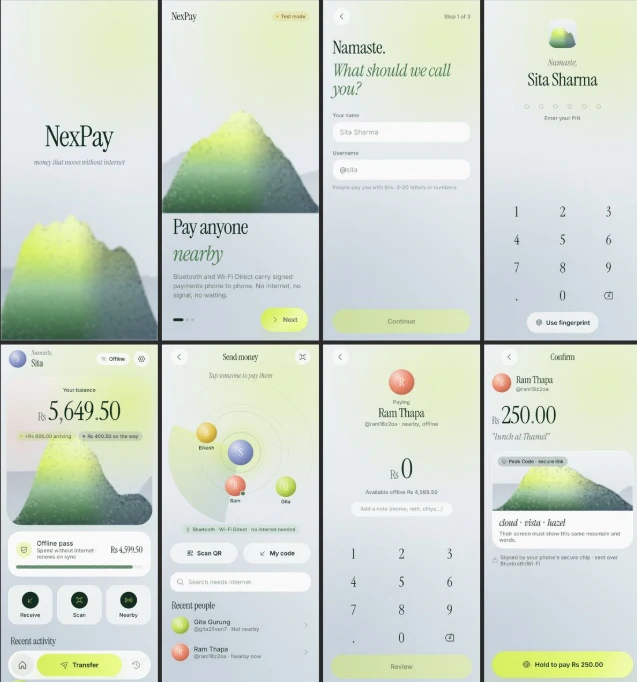

01Android · v0.3
NexPay
Money that moves without internet.
Half of Nepal knows the feeling: you're at a tea shop in the hills, you want to pay, and there's no signal. NexPay signs one-time payment notes on your phone and passes them along by QR, Bluetooth, Wi-Fi Direct or NFC. The person you pay can even pass it on before going online. It settles once you're back on the network, and it can only be spent once.
- Crypto
- ECDSA P-256 signed notes
- Transport
- QR · BT · Wi-Fi Direct · NFC
- Built
- Protocol, app, ledger server, design
- With
- Jitesh Prakash Chaudhary

try it. there's no internet in this card.